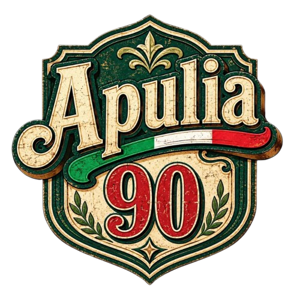

C:\GUARDIA_COSTIERA_PORTO_CESAREO\SITO_UFFICIALE.EXE

UFFICIO LOCALE MARITTIMO - PORTO CESAREO
Terminal Operativo Locale (S.I.T.) - Anno 1994
Sede operativa attiva sul litorale ionico salentino. Ottimizzato per modem 56k.
Connesso a: Nodo Porto Cesareo (Delegazione di Spiaggia)
Visitatori N°: 002491